Keto made simple
Free keto calculators, food lists, meal plans, and honest beginner guides. No sign-up, no fuss — just practical help to start and stick with keto.
Free Tools
Keto Macro Calculator
Enter your daily calories to get a keto macro split (70% fat, 25% protein, 5% carbs).
Net Carbs Calculator
Net carbs = total carbs minus fiber.
BMI Calculator
BMI = weight (kg) divided by height in metres squared.
Keto Meal Planner
Pick a day and get a simple keto meal plan.
Weight-Loss Timeline on Keto
Estimate how long it takes to reach your goal at a safe rate of 0.5 to 1 kg per week.
Guides
 Keto for Beginners
Keto for BeginnersA plain-language start to the ketogenic diet: how it works, what to eat, and how to begin safely.
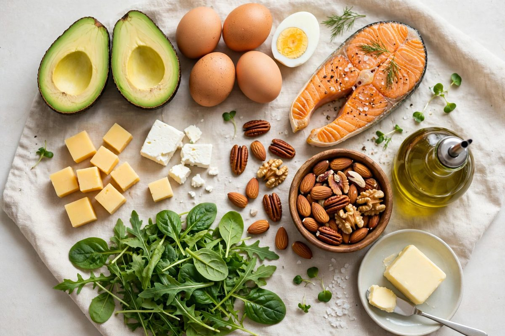
Keto Foods ListThe complete list of foods that fit a keto diet, plus the ones to avoid and the ones to watch.
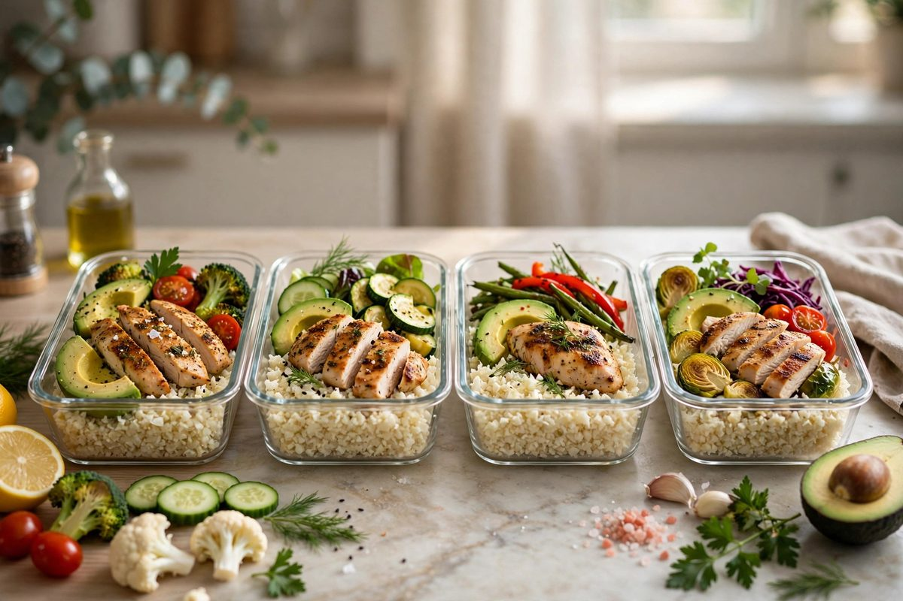
Keto Meal PrepPlan, cook, and store a week of keto meals in one session, with practical storage tips.
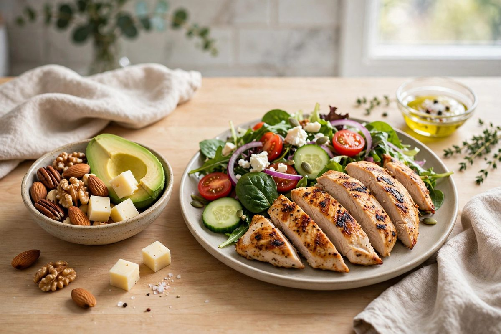
Common Keto MistakesThe ten most common keto mistakes, why they stall progress, and how to fix each one.
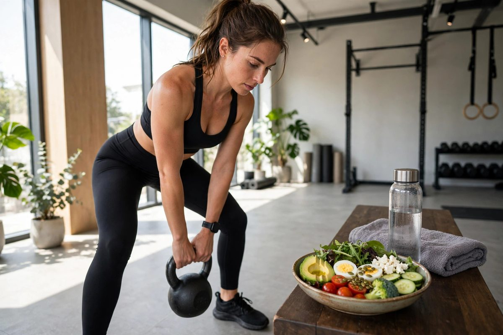
Keto and ExerciseHow to train on keto: energy, strength, endurance, and what to eat around workouts.
 Keto Desserts
Keto DessertsSweet treats that stay keto: chocolate, cheesecake, ice cream, and baking swaps that work.
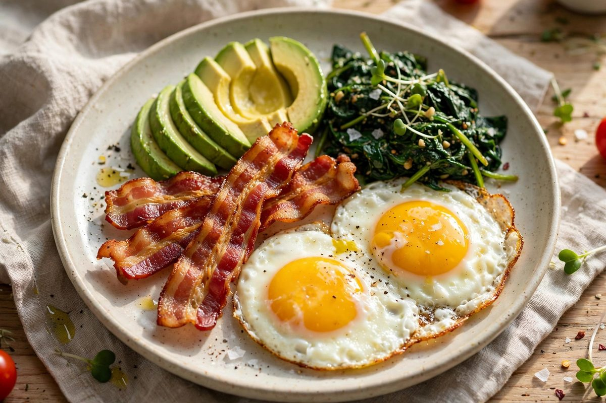
Keto BreakfastQuick and satisfying keto breakfasts, from eggs and avocado to make-ahead muffins.
 Keto Lunch Ideas
Keto Lunch IdeasEasy keto lunches for work, home, and on the go — salads, wraps, soups, and leftovers.
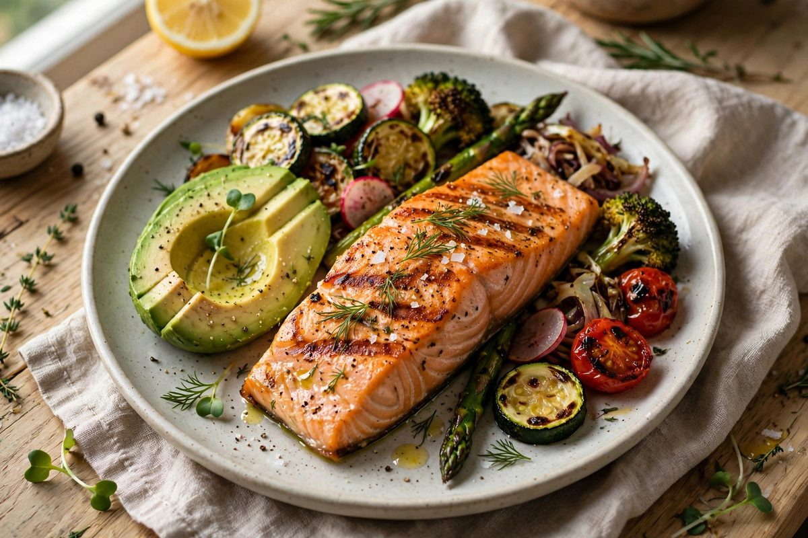
Keto Dinner RecipesTen family-friendly keto dinners, from one-pan chicken to creamy salmon and beef chilli.
 Keto Snacks
Keto SnacksThe best keto snacks — sweet, salty, and crunchy — plus what to avoid and when to snack.
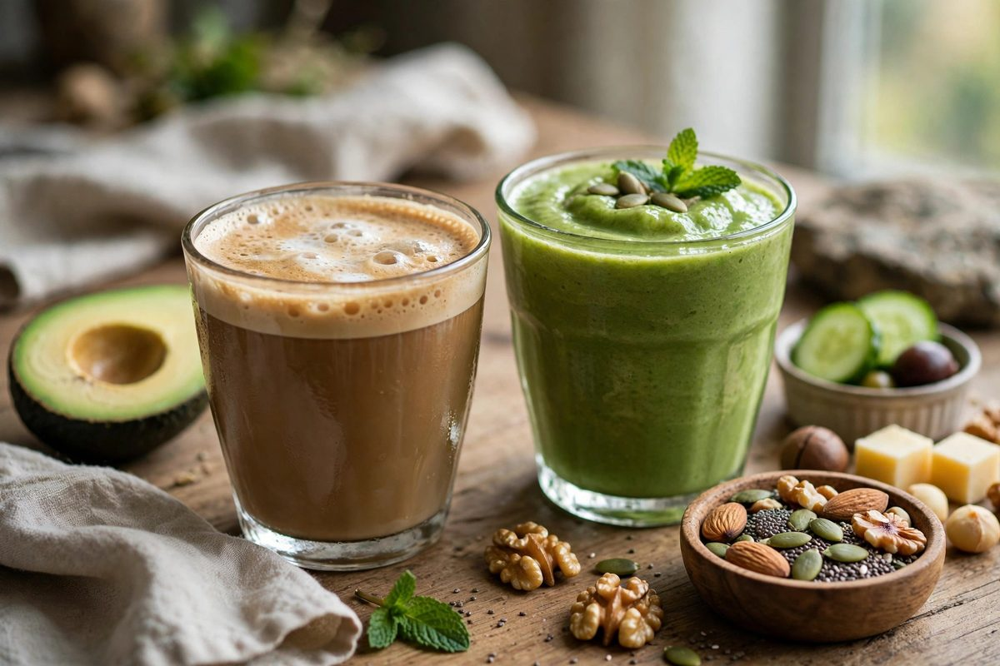
Keto DrinksWhat to drink on keto: water, coffee, tea, and the occasional keto-friendly cocktail.
 Keto for Women
Keto for WomenHow keto affects women's hormones, cycles, and weight loss — and how to adapt it.
 Keto and Intermittent Fasting
Keto and Intermittent FastingCombining keto with intermittent fasting: schedules, benefits, and how to start safely.
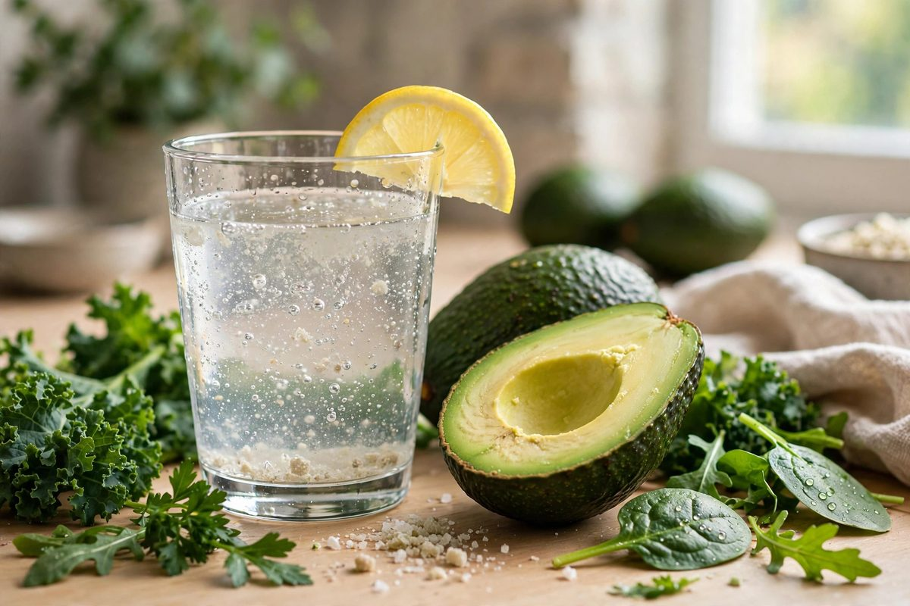
Keto FluWhat keto flu is, why it happens, and how to prevent and treat it in the first week.
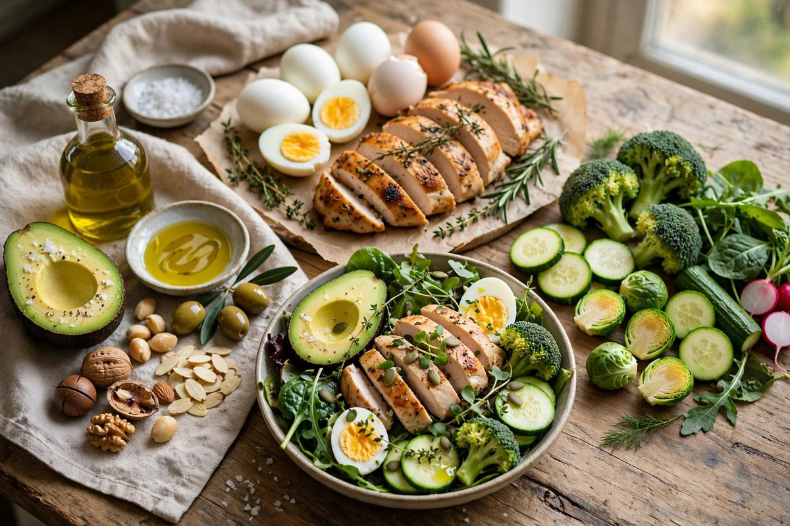
Keto Macros ExplainedWhat keto macros are, how to calculate yours, and how to track them without stress.
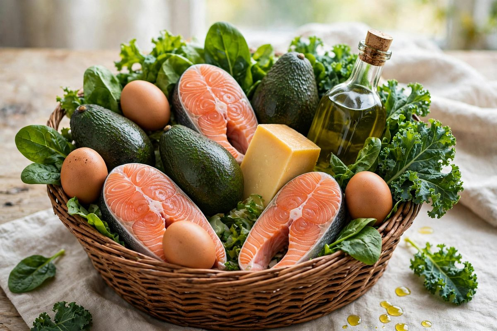
Keto Shopping ListA printable keto shopping list organised by aisle, plus pantry staples and what to skip.
 Keto on a Budget
Keto on a BudgetHow to eat keto cheaply: affordable proteins, bulk buying, and meals that cost less.
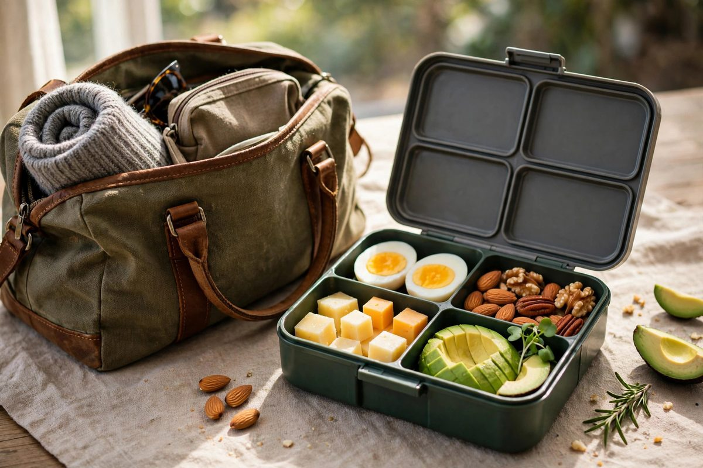
Keto Travel TipsStay keto on holiday, on flights, and on road trips — packing, ordering, and planning.
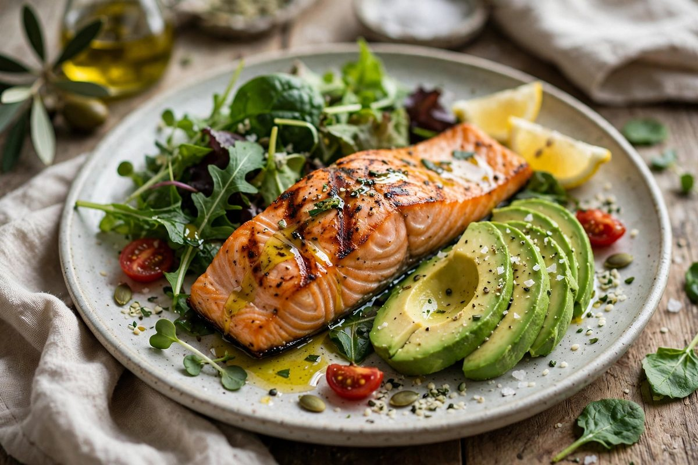
Keto and CholesterolWhat keto does to cholesterol, what the numbers mean, and when to talk to your doctor.
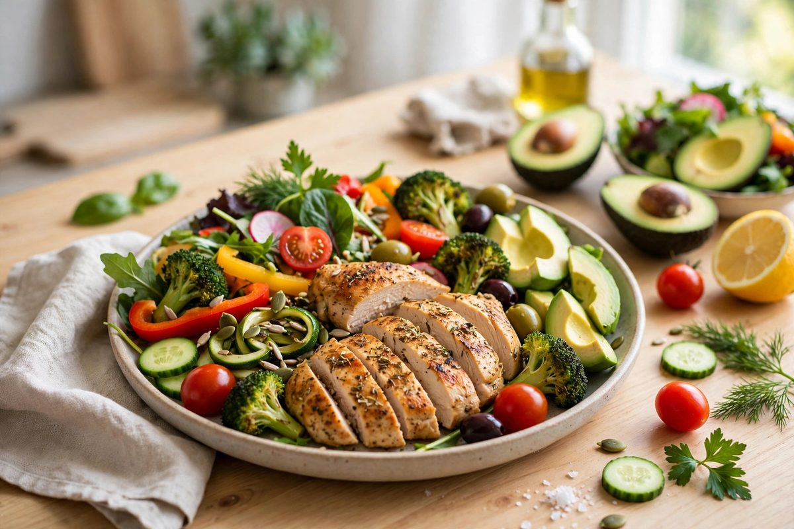
Breaking a Keto PlateauWhy weight loss stalls on keto and the practical steps that restart it.